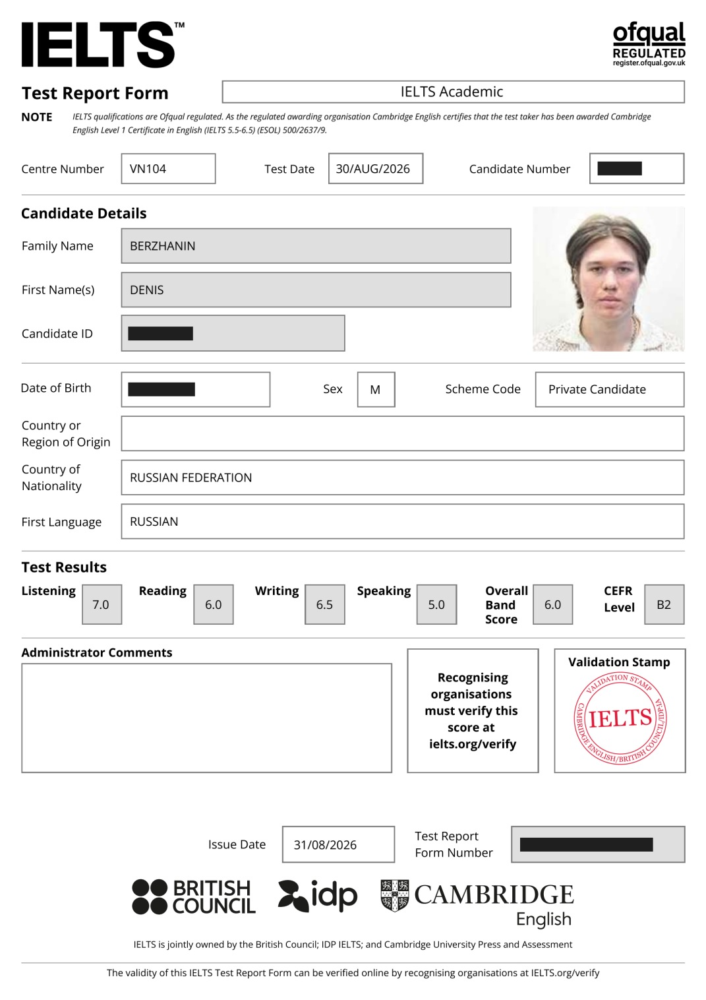
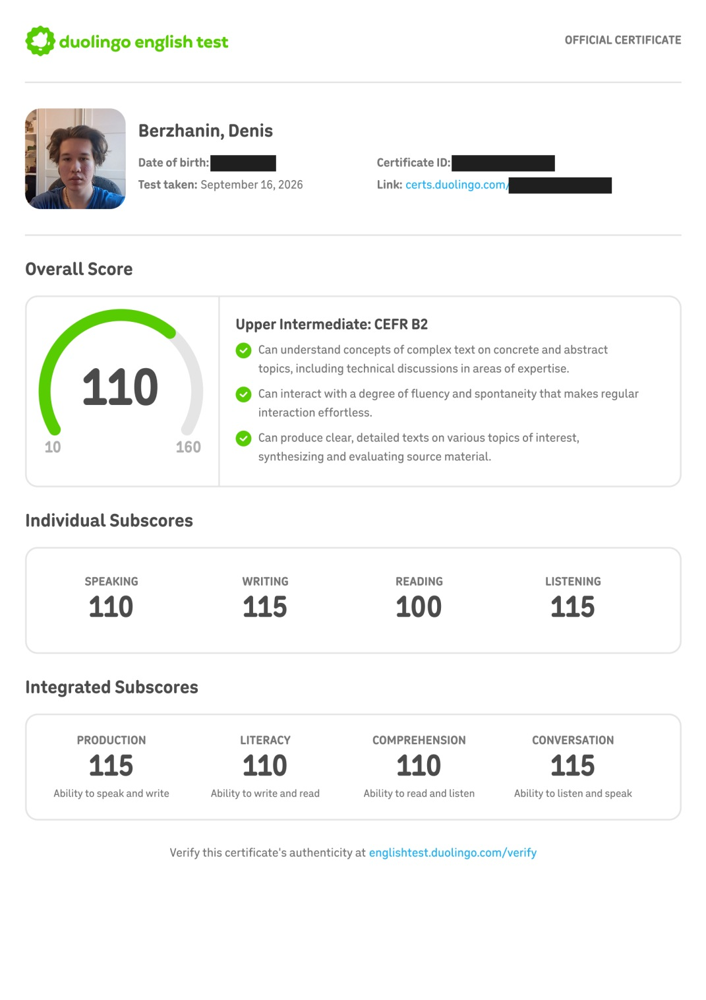
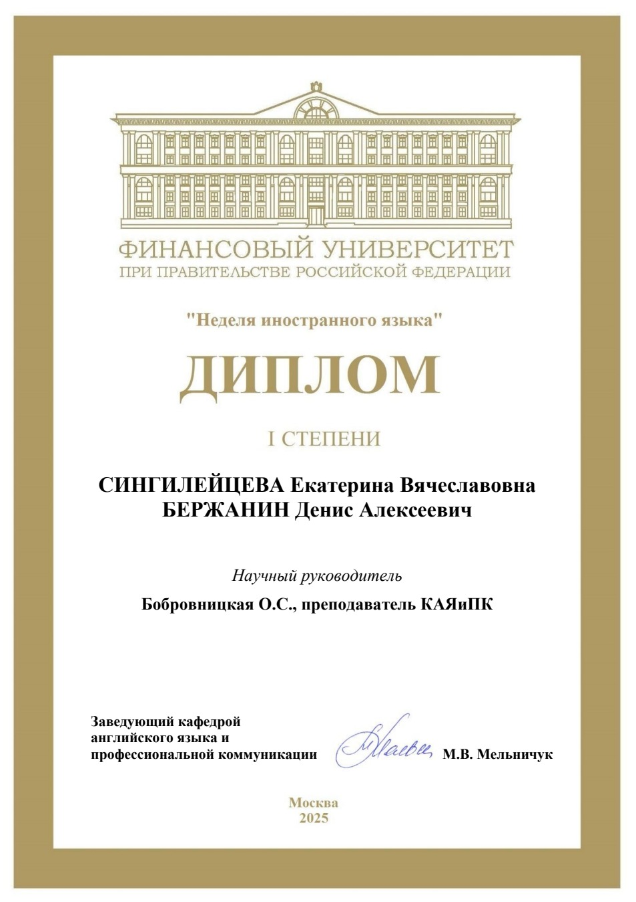
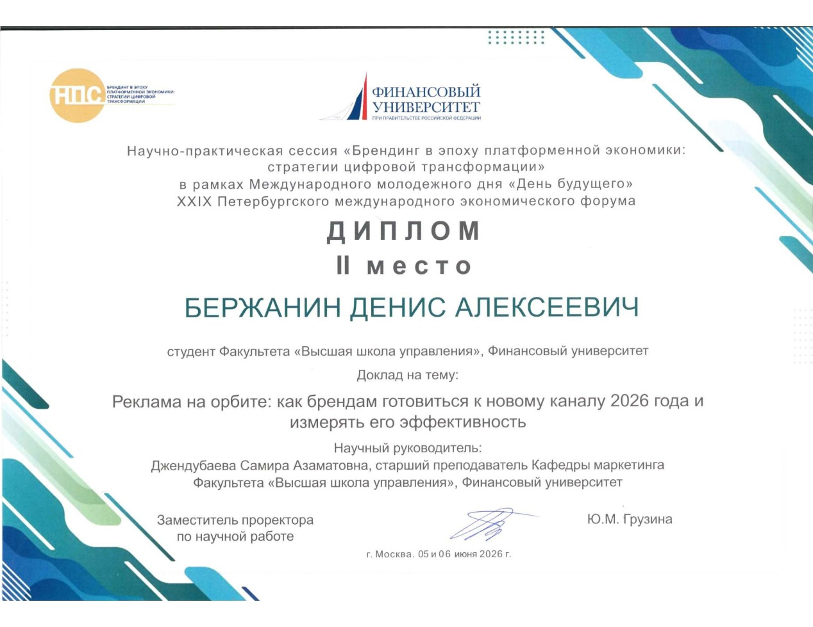
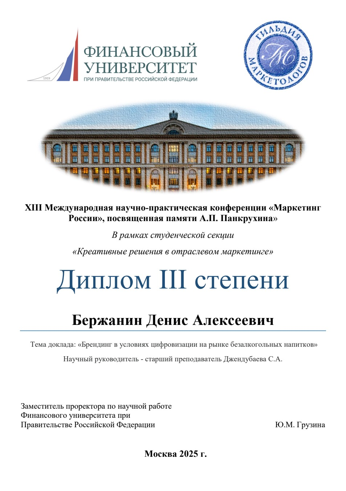
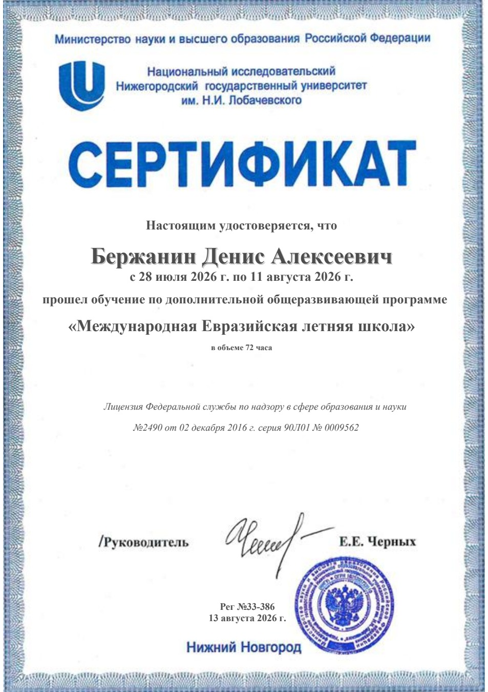
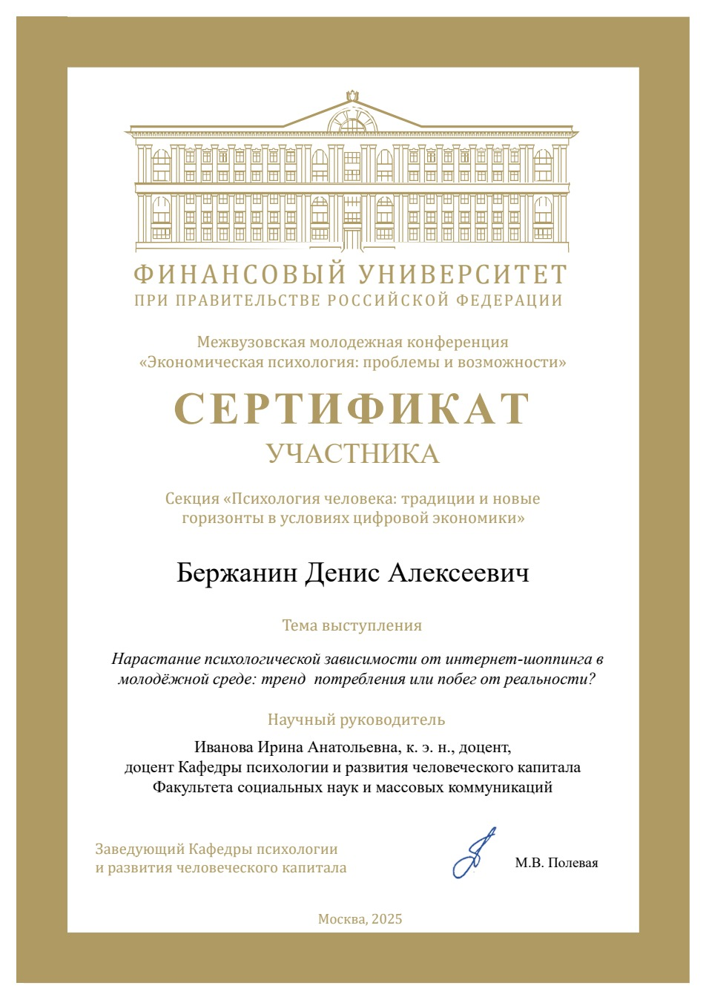
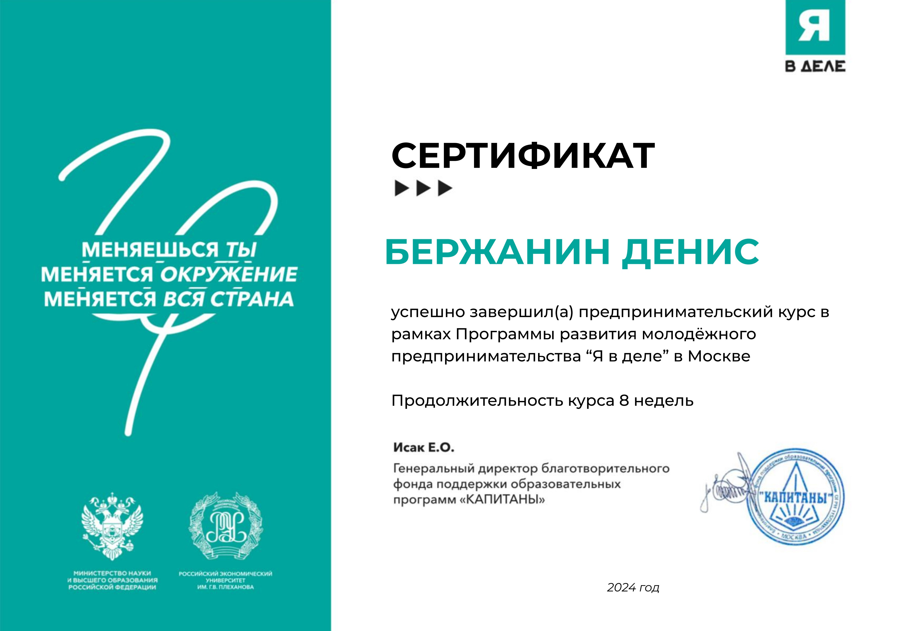

ООО «Неровилль»исследование и брендинг
- Задача
- Университетское исследование по заказу компании: рынок и потребители, рекомендации по ребрендингу и репозиционированию.
- Моя роль
- Участвовал в подготовке, презентации и защите результатов.
Обо мне
На главнуюМаркетинг.
Исследования и брендинг.
Ищу стажировку в сфере маркетинга
3-й курс · Высшая школа управления · группа МК24-3
Финансовые показатели — сценарные оценки; программа не запускалась.
Работа представляет концепцию выхода на рынок.
Анализ рынка и конкурентов, сегментация, опросы и глубинные интервью. Первичные и вторичные данные, позиционирование, SWOT / PEST, 4P / 7P.
Сопровождение команд, постановка задач и дедлайнов, отчётность, презентация и защита результатов.
Соавтор опубликованной статьи о брендинге на рынке безалкогольных напитков в журнале из перечня ВАК. Исследовательские работы и выступления на конференциях.
Самостоятельно изучаю дизайн: презентации, концепты интерфейсов, логотипы и графика. Для меня важно и содержание, и то, насколько понятно оно представлено.
Визуальные работы ↗I степень · Неделя иностранного языка, 2025. Совместная работа с Екатериной Сингилейцевой.
II место · «Брендинг в эпоху платформенной экономики», 2026.
III степень · «Маркетинг России», 2025.
Посмотреть дипломы ↘Международная Евразийская летняя школа ННГУ · 72 часа · 2026
«Я в деле» · предпринимательский курс · 8 недель · 2024
Английский · CEFR B2
6.0/ 9
CEFR B2
Открыть PDF: IELTS AcademicПубличная копия: дата рождения и личные номера скрыты.
110/ 160
CEFR B2
Открыть PDF: Duolingo English TestПубличная копия: дата рождения и личные номера скрыты.
Iстепень

Финансовый университет
Совместная работа с Екатериной Сингилейцевой.
Открыть PDF: Неделя иностранного языкаIIместо

Финансовый университет · 5–6 июня
Реклама на орбите: как брендам готовиться к новому каналу 2026 года и измерять его эффективность.
Открыть PDF: Брендинг в эпоху платформенной экономикиIIIстепень

Финансовый университет
Брендинг в условиях цифровизации на рынке безалкогольных напитков.
Диплом PDF: Маркетинг России Сертификат докладчика: Маркетинг России
ННГУ им. Н. И. Лобачевского · 28 июля–11 августа
Открыть PDF: Международная Евразийская летняя школа
Финансовый университет
Нарастание психологической зависимости от интернет-шоппинга в молодёжной среде: тренд потребления или побег от реальности?
Открыть PDF: Экономическая психология
Программа развития молодёжного предпринимательства · Москва
Предпринимательский курс.
Открыть PDF: Я в делеПортфолио